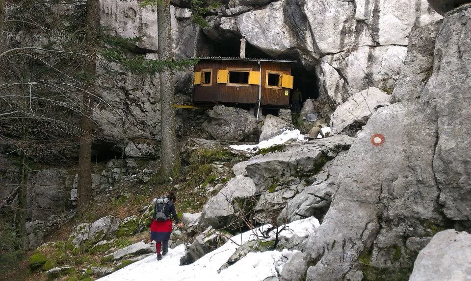

Prvi izlet nakon škole (a nema Luke da sastavi tekst)
Piše: Nikolina Buljan Čudno je to, kada stojiš na deset metara od jame odmah ti netko od instruktora viče da se slučajno ne približavaš, jer što?! Upravo si se mislio lasta stilom baciti na glavu dolje? Ali kada hodaš…

Piše: Nikolina Buljan Čudno je to, kada stojiš na deset metara od jame odmah ti netko od instruktora viče da se slučajno ne približavaš, jer što?! Upravo si se mislio lasta stilom baciti na glavu dolje? Ali kada hodaš po špicastim stijenama kanjona ispod kojih se otvaraju ponori duboki desetke metara onda je domet- budi pažljiv! I to je to. Tako Stipe i ja stojimo na vrhu nekih predivnih i opasnih stjenčuga. On se spušta, a ja mu iza leđa brundam o tome da ovo nije rekognosciranje, kojeg me vraga popeo gore itd. „Stavi jednu nogu tu“, odgovara. Stavim jednu nogu tu. „Sad stavi drugu nogu tu“ – stavim drugu nogu tu i shvatim da je ovo najbliže što sam bila da napravim špagu. Eto, kaže on, sad se samo prebaci. „Kako jebote?????“, psujem opet. Ali o tome da pretjerujem govori vjerojatno i činjenica što sam se bez ogrebotine spustila dolje i nastavljamo se povlačiti po rupama da vidimo ima li koja potencijal jame. To se u speleologiji zove rekognosciranje. Već je kasno subotnje popodne i nemamo vremena za spuštanje u bilo kakvu ozbiljniju jamu. Ova koju smo htjeli pogledati je kao i sve ostalo oko nas, puna snijega. Stigli smo do ulaza, Domagoj se spustio koji metar i rekao da se od snijega ništa ne vidi, izašao vani, nabrali smo vrećicu medvjeđeg luka, upisali u GPS da se rupa od sada zove ‘Jama medvjeđeg luka’, puknuli koordinate i krenuli opet nazad prema Ratkovom skloništu.
Ratkovo sklonište nalazi se na 1184 metra u srcu Velike Kapele na lokaciji Bijelih i Samarskih stijena. Izgradili su ga članovi PD-a Velebit 1952. godine. Nakon što je izgorilo 1982. godine, obnovljeno je i opet služi kao sklonište. Meni nešto najdivnije što sam vidjela. Ipak, za subotu smo imali drugačiji plan. U Ratkovom skloništu smo trebali biti najkasnije u podne. U Ogulinu smo se na parkiralištu okupili na kavi i krenuli prema Bijelim i Samarskim stijenama. Ana, Stipe, Domagoj, Tibor, Darko (Kuma) i ja. Pet kilometara prije doma, na cesti leži drvo. Izračunali smo da bi isto vremena izgubili ako hodamo tih pet kilometara do doma ili ako okrenemo aute i pravac Delnice pa probamo s te strane. Biramo ovu drugu opciju jer Ana još uvijek ima svog robotića na nozi i bilo bi blesavo da hoda toliko dugo. Nakon sat i pol vožnje po predivnom krajoliku Gorskog kotara stižemo na pravi put. Tu nas opet čeka prepreka, Višnja (Velebitaški auto) je zapela u snijegu. Dečki guraju ali nakon stotinjak metara ponovno smo zaglavili. Kangoo bi možda i mogao proći ali odlučujemo ostaviti aute i krećemo s opremom prema stazi koja nas vodi u sklonište. (Hvala tati što me nekidan natjerao da stavim ljetne gume :/ )
Nakon 40-tak minuta hoda, Tibač, Domagoj i ja zaključujemo da smo se definitivno izgubili. Vadi se karta i GPS ali unatoč svemu, mi i dalje pojma nemamo gdje je sklonište. Jedva sam dočekala da ih podbadam kako su nam prodavali fore na školi o crtanju, snalaženju u prostoru s kompasom itd. Vraćamo se opet istim putem, od propadanja u snijeg su nam već mokre noge ali nakon novih sat vremena stižemo do natpisa- ‘Mole se svi koji idu prema Ratkovom skloništu da sa sobom ponesu drvo.’ To znači da smo blizu skloništa. „Ma hoću k***“, komentira Tibač koji već sa sobom nosi- tri litre vode, tri litre vina, četiri litre piva, ruksak, transportku s opremom i torbu s fotićem. Nemam pojma kako uopće hoda ali nakon pet minuta smo pred skloništem. Ana i robotić su na cilju prije nas. Sramota. Skupljamo drva, čistimo sklonište, vijećamo gdje ćemo i kako. Kasno je i idemo samo prošetati do jame kojoj je Stipe kasnije dao ime po medvjeđem luku, a Tibač i Kuma kao ostaju cijepati drva dok Ana počinje pripremati večeru. E tu nismo zakazali, nakon što smo se mi vratili, vade se ćevapi i jadranske lignje spremne za roštilj, kolači, rakija, loži vatra i počinje divna večer na divnom mjestu.
Ujutro mi se sve vrti pod nogama i zaključujem da je hodanje po Bijelim stijenama nakon cuganja jaaaako loš potez. Da sad ne duljim s pričom, cijelo jutro smo se pentrali, smijali, neki su otišli u jamu i nakon tridesetak metara zaključili da je i ona zakrčena snijegom i taman tada Ana viče da su ćevapi gotovi. Nazad na klopu, ruksake i transportke na leđa i prema Zagrebu. Stali smo još u Vrbovskom odnosno Kamačniku na pivu i štrudlu od borovnica. Iako se radi o parku koji već na ulazu sa slapom izgleda super, jedino Stipe ide do kraja parka. Mi ostali se naredna dva sata nismo pomaknuli s ulaza i dok sjedimo na suncu, valjamo se od smijeha i super nam je iako su nam svima zubi crni od borovnica, prljavi smo i umorni. I to je otprilike to. Kraj jednog predivnog vikenda. Iako je ovo bio prvi vikend bez ekipe sa škole (stalno smo vas spominjali) bilo je opet jedno posebno iskustvo s divnim ljudima. [gallery ids="809,810,811,812" type="rectangular"]